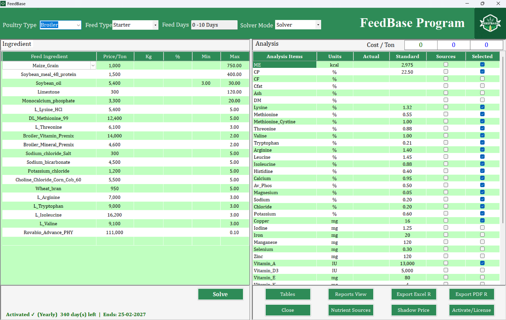
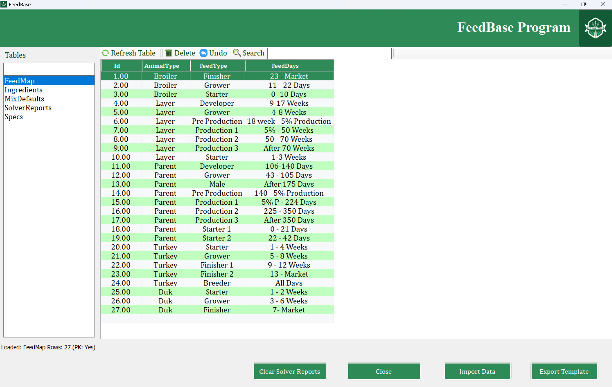
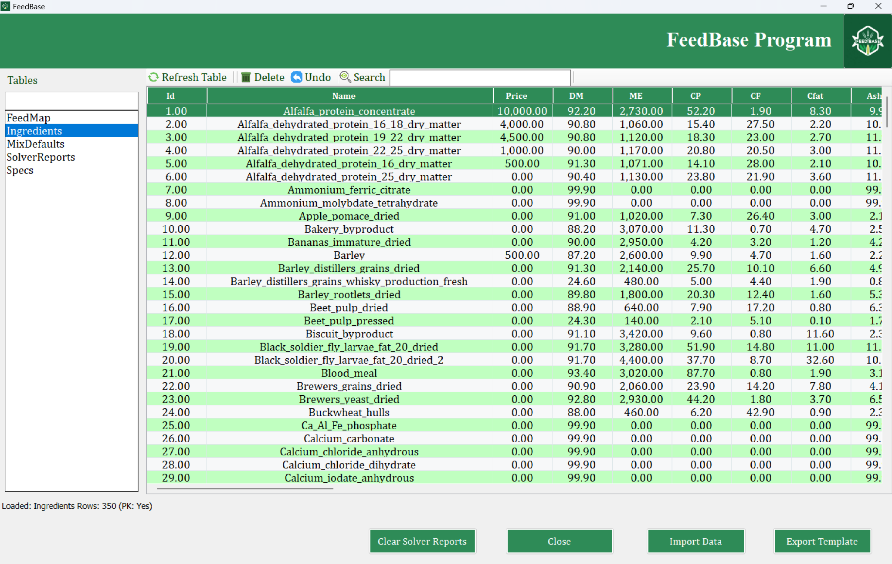
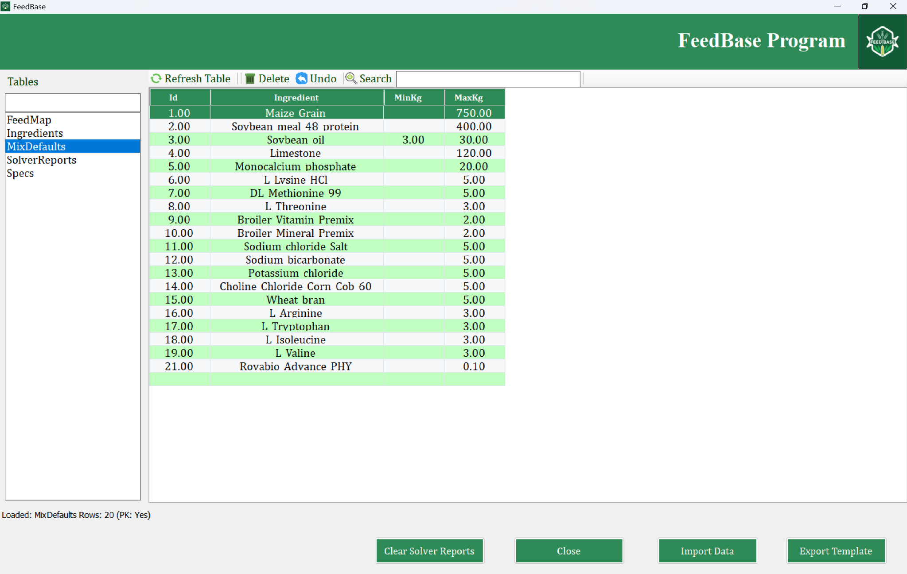
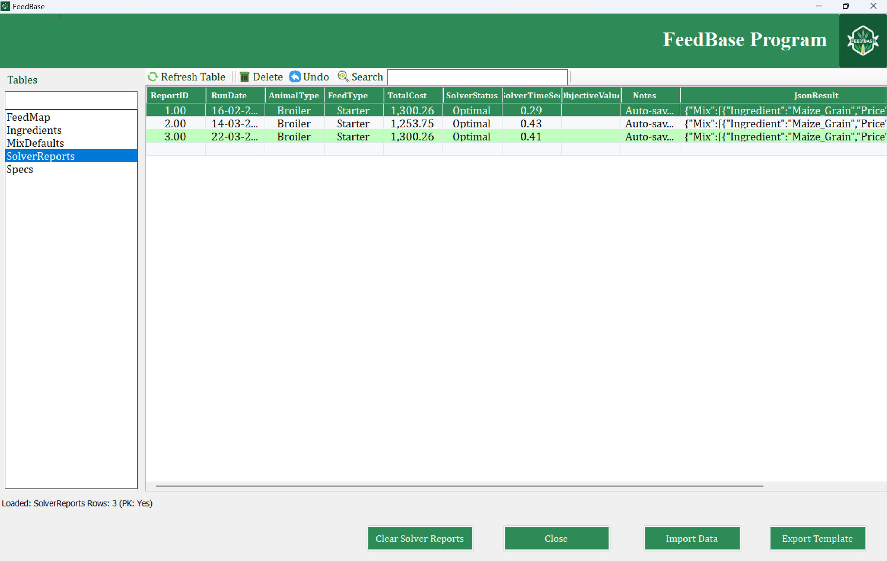
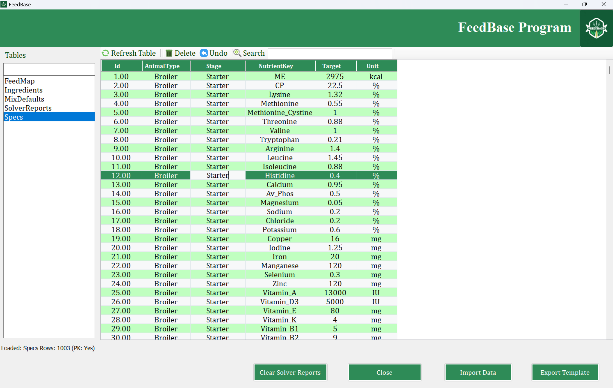
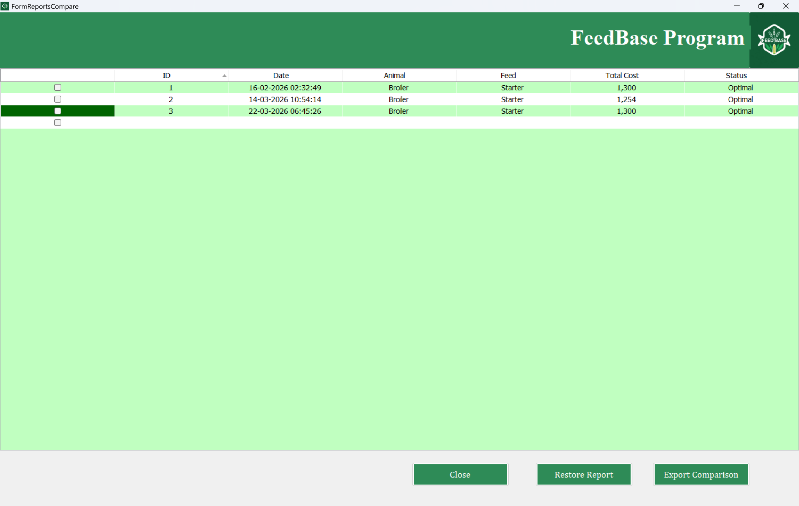

Powerful Feed Optimization System
FeedBase is built as a complete workflow, from selecting the feed program and ingredients, to optimization, nutrient targeting, report history, and formula restoration.

Main Formulation Screen
The main interface allows you to select poultry type, feed type, feed days, and solver mode, while monitoring ingredients, prices, limits, nutrient standards, and overall formula cost in one place.

Optimization Solver
Run advanced optimization using Solver to generate the lowest-cost feed formula while meeting nutritional requirements automatically and efficiently.

Feed Program Mapping
Define feed programs for multiple animal types and production stages, making it easy to switch between starter, grower, finisher, and other feed plans.

Ingredient Database
Maintain a complete ingredient database with nutritional values, price data, and raw material details required for accurate formulation.

Mix Constraints
Control minimum and maximum inclusion rates for each ingredient, helping you keep formulations realistic, safe, and production-ready.

Solver Reports Archive
Store solver results and review previous optimization runs, including cost, status, timing, and saved formula data for later use.

Nutrient Specifications
Define target nutrient values for each animal type and stage, ensuring every formula is evaluated against the correct nutritional standards.

Formula Comparison & Restore
Advanced comparison tools allow you to review previous feed formulas, compare cost and status, and restore any saved formulation with one click.